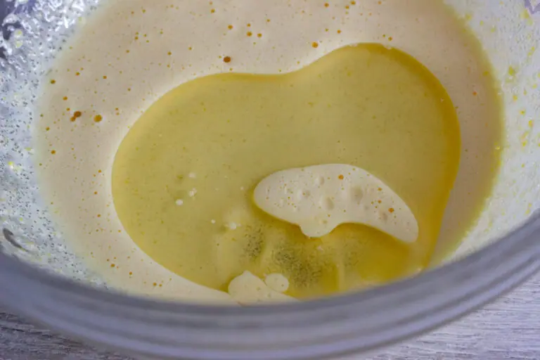
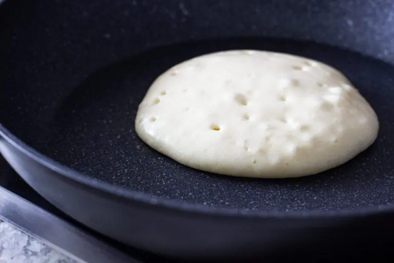

Панкейки на молоке
Панкейки на молоке — вот что сегодня будет у нас на завтрак! Вкусные, пышные, ванильные, нежные-нежные! Словно самые настоящие минибисквиты, только испечённые на скороводе! Всё в строгом соответствии с названием, ведь pancake — слово, состоящее из двух: pan, что означает «сковорода», и cake — «торт».
Внешне американские панкейки — могут напомнить вам наши оладьи, но сходство обманчиво: панкейки крупнее их по размеру и совсем не такие жирные, т. к. готовятся на практически сухой сковороде. А ещё свою знаменитую пышность панкейки получают не благодаря разрыхлителю, а за счёт взбитых яичных белков. То есть, несмотря на схожий состав продуктов и внешний вид, технологией приготовления панкейки очень отличаются от оладьев и блинов.
.webp)
Существует много разных рецептов панкейков, мы же приготовим самые что ни есть классические — панкейки на молоке! Это очень просто, быстро и вкусно!
Ингредиенты
- Яйца 2 шт
- Сахар 70 г
- Молоко 200 мл
- Масло растительное или сливочное 40 г
- Мука 200 г
- Разрыхлитель 1 ч.л.
- Соль щеп.
- Ванилин на кончике ножа
*Ягоды, мёд, сгущёнка, джем, сливки или сметана для подачи по желанию
Готовим тесто для панкейков
Pазделяем яйца на желтки и белки. Следим, чтобы в белки не попало ни капли желтка! Белки помещаем в сухую и чистую миску, можно для верности даже протереть миску изнутри салфеткой, смоченной в уксусе или водке.
В большую миску кладём два желтка и добавляем к ним 70 г сахара (часть сахара — 10 г — можно заменить ванильным либо добавить ванилин — буквально на кончике ножа!).
Хорошо перемешиваем миксером.
Добавляем 40 г масла — у меня здесь растительное, но лучше взять растопленное сливочное 82,5%, будет нежнее и более сливочно на вкус! И более традиционно.

Далее чуть-чуть подогреваем 200 г молока и добавляем в яичную смесь.
Добавляем 200 г муки, щепотку соли…
…и 1 ч. л. разрыхлителя.
Всё перемешиваем.
В отдельной сухой и чистой миске, без следов жира, взбиваем белки до крепкой пены и состояния, когда они прочно сидят в миске и не стремятся при переворачивании её покинуть.
Аккуратно, но быстро вмешиваем белки силиконовой лопаткой в наше тесто. Движения должны быть складывающие, снизу вверх, как при замесе теста на классический бисквит.
Важно сохранить тесто воздушным, а оно получается таким из-за пузырьков воздуха в белках. Поэтому долго вымешивать наше тесто, приминая лопаткой белки и разрушая их воздушную структуру, не стоит. И уже тем более ни в коем случае нельзя мешать ложкой по кругу.
Тесто готово! Подобно бисквитному, оно стекает с лопатки широкой лентой.
Выпекаем панкейки!
А дальше всё просто. Нам нужна сковорода с антипригарным покрытием и желательно с крышкой. Смазываем один раз дно сковороды салфеткой, смоченной в растительном масле, и далее готовим уже без добавления масла. Огонь — средний или даже чуть ниже среднего, в зависимости от вашей плиты. Я готовила на 5 из возможных 9.
Панкейки, как правило, пекут по одному.
Наливаем половничек теста на сковороду.Немного разравниваем, придавая более круглую форму, но тесто обычно и само растекается достаточно хорошо, в меру.
Ждём, пока тесто схватится и пойдёт такими дырочками.

С помощью лопатки одним движением переворачиваем.И ещё немного подержим — до румяности. Можно накрыть крышкой, чтобы толстенький панкейк лучше пропёкся внутри и снимаем панкейк со сковороды.
Панкейки на молоке готовы!
А дальше останется только положить их стопочкой друг на друга и предложить к ним мёд, любимое варенье или сгущёное молоко, сметану или взбитые сливки! Идеально — свежие ягоды или фрукты! Без добавок они, конечно, будут суховаты, ведь готовятся они без масла.